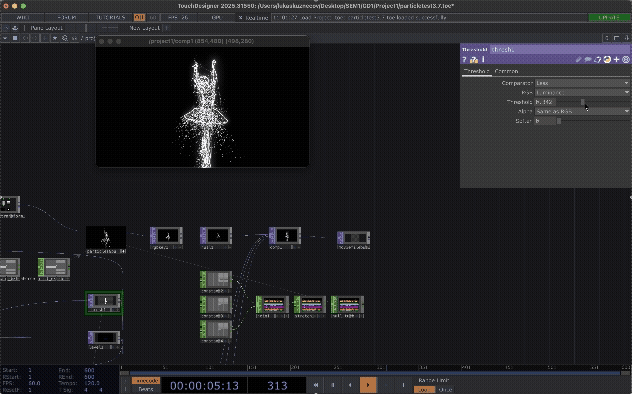
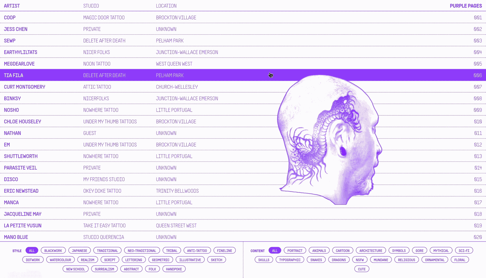
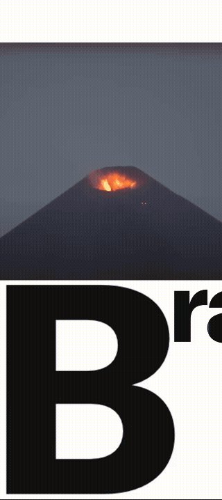
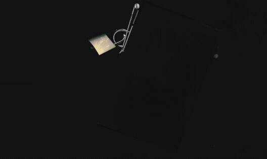
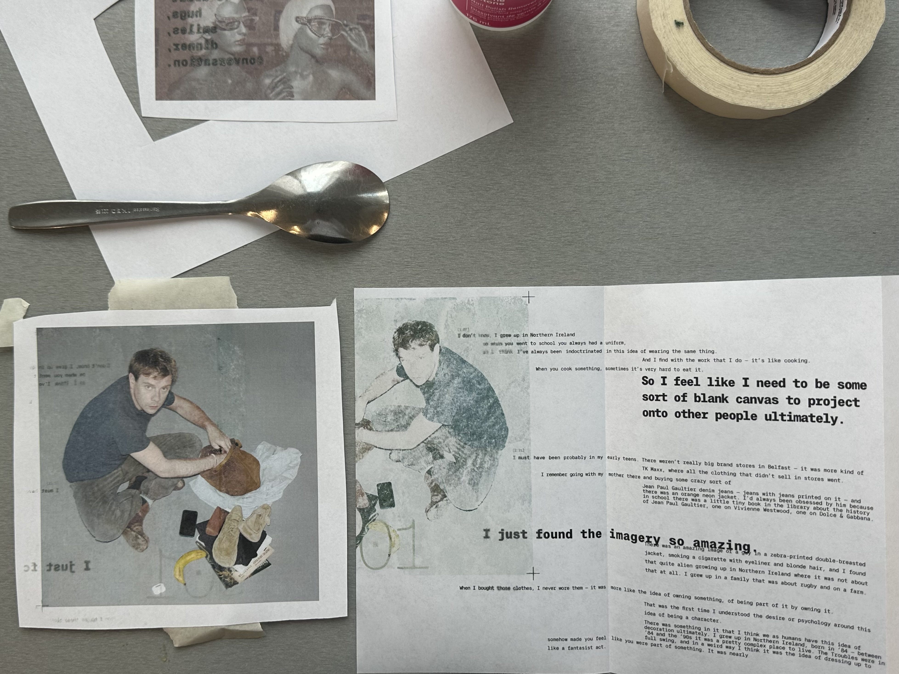
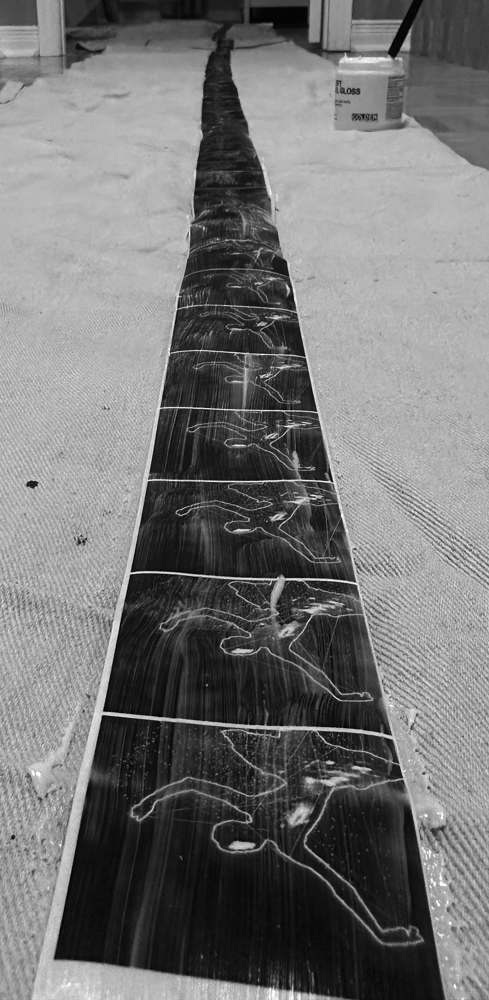
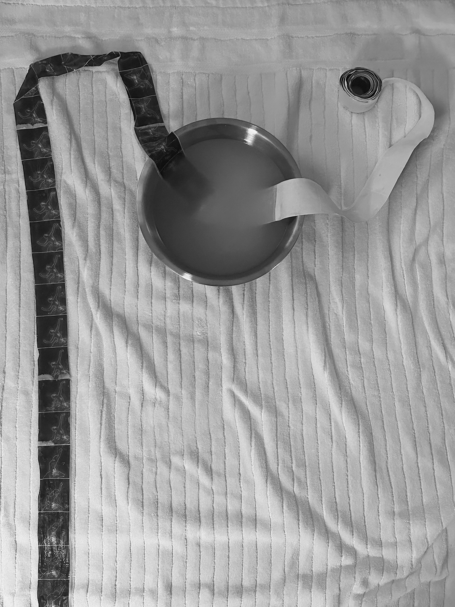
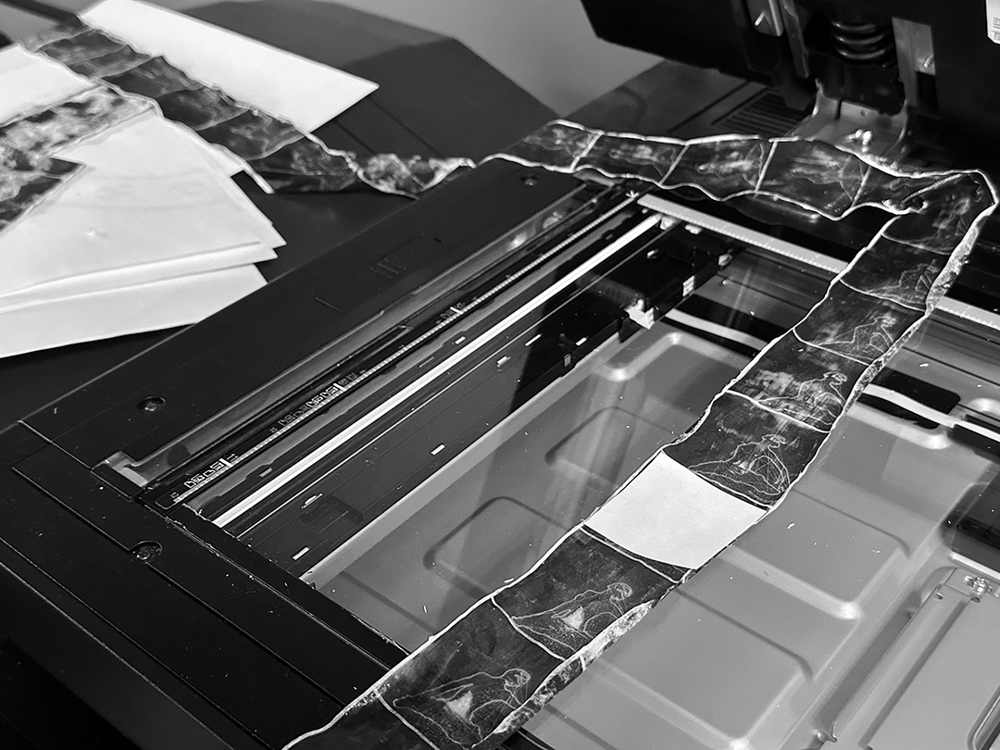

SILENCE
A video narrative constructed from an interview on the nature of silence. The subject elaborates on the medium of dance as a channel for the release of mental turmoil, allowing them to achieve an inner silence. Analog and digital techniques are layered to create a dynamic sequence that marries choreography and typography. 
Footage of dancers is reworked and assembled using a network built in TouchDesigner
Type is set to work in concert with the motion of the choreography. Each frame of type is printed on paper, scanned and reassembled which allows for the variable of texture to be introduced. A subtle analog gradient is created through the physical crumpling of paper. The sequence starts with more textured frames and ends in smooth static black. An inner silence is achieved through dance as catharsis.
which allows for the variable of texture to be introduced. A subtle analog gradient is created through the physical crumpling of paper. The sequence starts with more textured frames and ends in smooth static black. An inner silence is achieved through dance as catharsis.

PURPLE PAGES
View the live site here.
Purple Pages is a web index for Toronto-based tattoo artists. The site is designed to allow users to filter through artists based on style and subject matter of their work, quickly preview select pieces and subsequently link to their personal page.
The index is meant to serve as a neutral, non-algorithmic space for users to seek out tattoo artists. The name is both a reference to the nature of the site as a directory, and the typical use of purple stencil paper when applying tattoos. The application of the purple across all preview images creates a uniformity that lends itself to the nature of the site as an index. It also works to establish a strong visual consistency across a range of images that have vastly different visual qualities.

SCI AM
An elaboration of the rhetoric voice of the print publication Scientific American into a digital motion identity. The compositions use motion to transform the visual and typographic content of the magazine into motion that embodies the magazine.
The quality of the motion draws on the core values of the magazine: analysis, discovery, and documentation. Image scanning, viewfinder markings, and microscopy are all visual devices at the foundation of the motion system that speak to the values of Scientific American.

FASHION NEUROSIS FILES
A conceptual editorial series that turns a series of Fashion Neurosis interviews into typographic compositions. The interviews conducted by Bella Freud play with the format of a psychotherapy appointment, which the editorial works to address. 
A fabricated acrylic cover is turned into a locked file box, where the individual booklets become files. Each "file" transcribes content from an interview with a specific fashion designer, the visuals complementing the content.
The typography uses shifting margins, alignments and leading to disrupt traditional page structure, turning each booklet into a stream of consciousness. The use of monospace draws connection to the documentary nature of the concept, as if transcribed using a typewriter. All images are manually applied to the pages using a acetone-transfer


IN SEQUENCE
This motion poster advertises the exhibition of Silence. The poster has AR functionality where scanning the QR code will play the video in real space through your phone camera.   
The motion of the type and graphic elements support the central dancer graphic. The brackets operating visually as a viewfinder for the sequence, the type shrinking as the dancer comes into focus.
The sequence of the dancer is assembled in a stop-motion style. Each frame of the sequence of the dancer is printed and applied to a long strip of paper using acrylic gel medium

DECODE+DISTILL
Documentation of research and writing from my first year of design education. The two volumes in tandem present two core themes: DISTILL (refining output through research) and DECODE (drawing connection between form and meaning).
The first volume DISTILL is a series of visual research which pairs with the writing in DECODE to function as a visual index.
The second volume DECODE is structured around the idea of Plato's Divided Line, which in this context elaborates on the way that pure form, image, and text translate meaning.
The format and assembly of the edition highlights the interplay between research, documentation, and material exploration. All of which are essential to my design process.